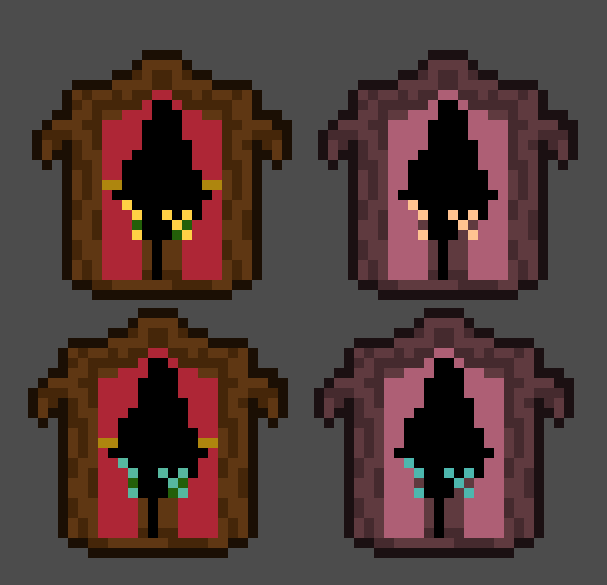
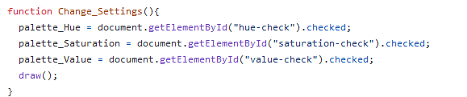
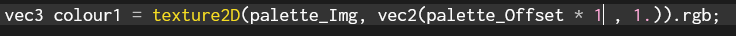
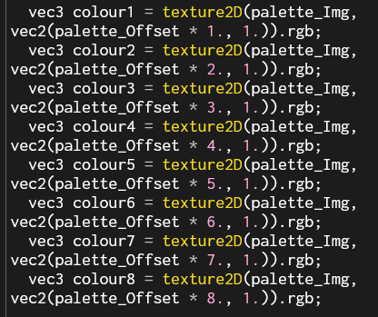
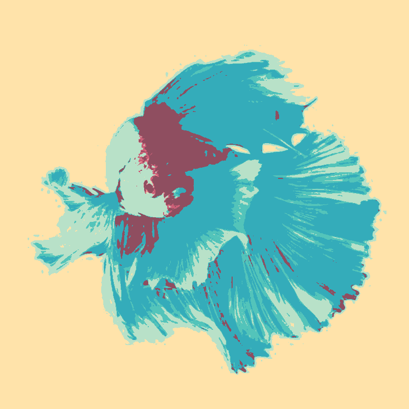
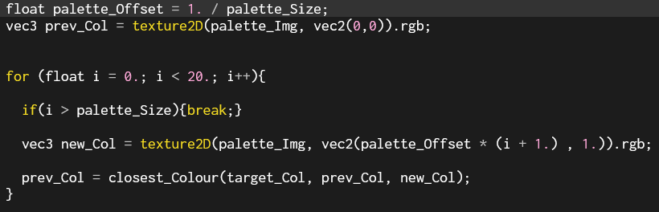

Applying Palettes To Images
What and Why?
Let’s start by talking about posterisation. Posterisation is a way of snapping all colours in an image to some amount of limited values. This creates flat blocks of colour and strange ‘rainbow’ patterns in the edges of light and dark. You often see it in horror games like Buckshot Roulette and Lethal Company, but it’s not like horror has a monopoly in rainbows.
The problem is, if you want to use it for a different mood, you need more control of what colours appear. You need control of the palette. Palettes aren’t that relevant in most art, but pixel art historically sticks very closely to limited palettes, and pixel art specific programs like Aseprite do it automatically.
I’ve spent some time working on pixel art shaders, and the typical ‘cheat’ way to use palettes is to just greyscale the image and have your palette in exact brightness order, but that doesn’t allow enough direct control to be useful in most games.

Take these two windows with different coloured flowers. Mathematically, the flowers are very similar colours, with very close saturation and brightness levels, so the only way to tell them apart is their hue, which is thrown away if you use a greyscale method.
Now, what if they were your health and stamina bar? Or variations of elemental enemies? Or a normal versus critical hit? Colour information is very important for player communication, but standard palettisation techniques almost always lose it. That’s what I want to fix here.
Execution
For this one I’m mostly translating a shader I wrote in Unity for college. The key part is this section, which takes two colours and a target colour and returns the one closest to the target colour.

Apologies for the poor highlighting, the online p5js editor isn’t very good for shaders. I’ve tried to be as descriptive as I can with the variable names. To break it down, find the difference between each colour and the target colour and then return the one with the lowest difference.
Defining the colour palettes is annoying if I just do it through a const array, and the GLSL arrays don’t seem to be behaving themselves.
![An error message reading [array constructor supported in GLSL ES 3.00 and above only]](Images/Code_ArrayError.PNG)
Ah, I see. If I want to use p5js, then I’m stuck in GLSL 1.0. And GLSL 1 does not like arrays for some reason.
...

I mean, if it works, it works. I have some ideas about getting palettes from images, like the ones the Lospec site exports. Loops and arrays are objectively better for this, but this’ll work for debugging, as long as I remember to normalise my rgb values.
(White screen not pictured)

That’s pretty cool, isn’t it? It’s palettised to the colour scheme I use on this website. Check out the shadows in the scales! But my real favourite part of this is when we get HSV involved.
HSV and settings
One quick set of borrowed conversion code later and we can implement some cool mixing. HSV stands for Hue, Saturation and Value, so by selectively keeping one or more of the attributes from the original image, we can retain some shading while changing the hue and other aspects.

Here’s the same image with the value carried across from the photo, which is what I stuck with for my college project, but I want to let the users fiddle with things live on the website.

A little bit of parameterisation and we’re ready to move into html. I’ve copied in my image uploading code from the dithering page and the rest of it should be pretty simple as well.

There were a few typos and the like, but now everything's live on the site! My favourite configuration is still hue and saturation but no value, but see what you think! There are a few image artifacts that appear in certain settings, the brightness is a bit low when the Value is palettised, and I'd like to let the user select a palette, but not today.
Palette images
Right. Image palette time. I grabbed this palette by Conker from lospec, and got to work. Assuming we’ll be using a fixed size of 8 colours for now, we can get an offset value of 1/8 to find each colour in the image, and ‘iterate’ through them to set the colours.

Unfortunately, we're defining the colours as constants right now, but if we want to change the active palette, I don’t think we can make it a constant. We’re not exactly changing it every frame either, but I don’t know if there’s a better way to do it than just moving the colour definitions into main().

This is really mesy without a loop... And we get a black screen. I checked to see if the colours are being correctly identified, and they are, but, of course, the colour definitions are now in the 0-1 range, instead of the more human-readable 0-255 I had before.

And here we have it. Cool right? And now all the logic is in the main() function, I can parameterise the palette size and make any arbitrary sized palette. With a real loop! Loops do have their performance issues in shaders, but it’ll only loop as many times as there are colours in the palette, which shouldn’t be too much anyway. More than 16 and you might as well be doing normal posterisation and colour correction.

But of course, loops need to have their length defined at compile time, which doesn't agree with the idea that the user would define the palette size.
But, I'm pretty sure the loop's maximum length that needs to be defined. Why don't we do something dumb?

I really ought to get this into a real profiler so I know exactly how much of an impact it’s having. For now, look at this cleanly readable code!
The arbitrary palettes give a slightly different result than hardcoded ones, which I think might be down to image compression? It’s not losing any colours, just shifting them around slightly. Something to investigate when I implement this in a full game engine maybe.
Godot and Performance
22/07/2024
Thankfully, Godot has very helpful docs for shader reference, so I've got my shaders up in a 3d scene quickly.

Now, let's look at the profiler and see how we're doing. It looks like we’re at about 3.47ms for the entire rendering frame time and the pass I think the shader is running on is 0.44ms on the gpu. Changing the size of the palette within the 20-colour limit seems not to have an impact, which makes sense from what I know of how shaders process loops.
My first try at optimisation comes from this stackoverflow answer. It’s not exactly the same situation, but by reading the palette texture in the vertex shader, I think I can save time wasted reading the texture for each pixel.
I think I’ve knocked the frame time down to about 0.36ms, so that’s some improvement. I’m not quite sure what I’m doing with the profiler, but that sounds good, so I’ll leave it there for now.